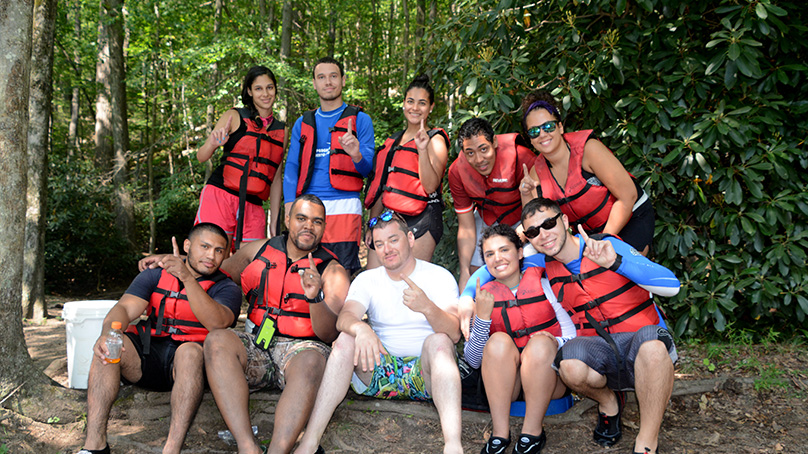

Rapids Rafting
Founded in the heart of the rugged river country in River Lindo,Honduras, Rapids was born from a shared love for the untamed beauty of nature and the adrenaline-pumping excitement of navigating wild waters. What started as a humble gathering of thrill-seekers soon evolved into a thriving community of adventurers, united by a common desire to conquer the rapids and embrace the challenges of the great outdoors.